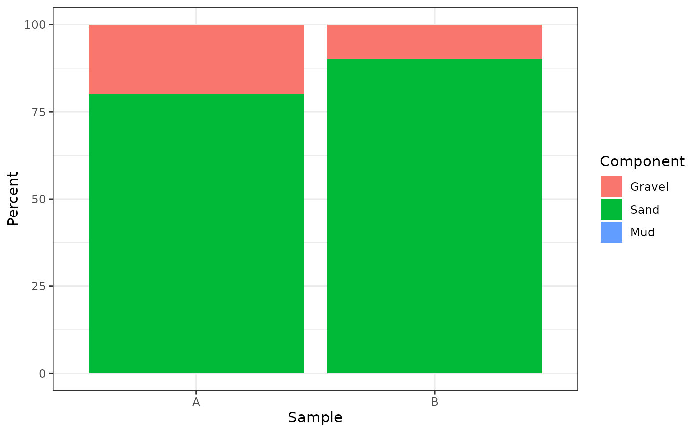
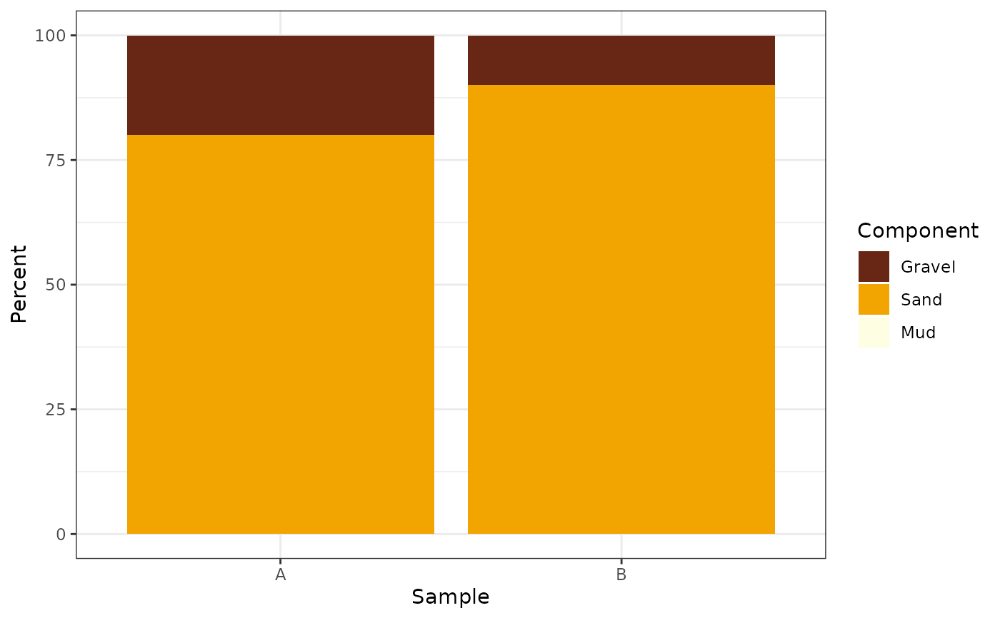

plot_fractions() plots fraction percentages from gs_fractions() as
stacked bars with one bar per sample. Fraction components use the normalized
particle-size scale from gsd_tbl; users do not need to specify size units
for plotting after import.
Usage
plot_fractions(
x,
scheme = "wentworth_major",
normalize = "none",
sample_id = NULL,
fill_palette = c("default", "YlOrBr", "none"),
na_to_zero = FALSE
)Arguments
- x
A valid
gsd_tblobject.- scheme
Built-in fraction scheme name passed to
gs_fractions().- normalize
Normalization mode passed to
gs_fractions().- sample_id
Optional character vector of sample identifiers to include.
- fill_palette
Fill palette.
"default"uses ggplot2 defaults,"YlOrBr"usesgrDevices::hcl.colors()with a yellow-orange-brown sequence, and"none"leaves the scale unchanged.- na_to_zero
Should unresolved fraction percentages be plotted as zero? The default
FALSEpreservesNAvalues returned bygs_fractions(). UseTRUEto draw stacked bars without dropping components whose thresholds could not be resolved from the available grain-size classes. This affects only the plotted data and does not change the underlyinggs_fractions()calculation.
Examples
x <- data.frame(
sample_id = c("A", "A", "A", "B", "B", "B"),
size_mm = rep(c(2, 0.5, 0.063), 2),
retained_proportion = c(0.20, 0.50, 0.30, 0.10, 0.60, 0.30)
)
gsd <- as_gsd_tbl(x, sample_id, size_mm, retained_proportion)
plot_fractions(gsd, scheme = "wentworth_major")

plot_fractions(gsd, scheme = "gravel_sand_mud", fill_palette = "YlOrBr")
